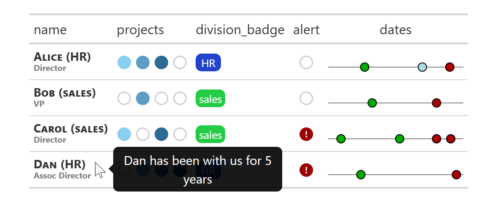

## table of dates
df_dates <- tibble::tibble(
name = c("Alice", "Bob", "Carol", "Carol", "Dan", "Alice", "Bob", "Carol", "Carol", "Dan", "Alice"),
var = c(rep(c("start", "end"), each = 5), "empty"),
date = c("2024-10-05", "2024-10-13", "2024-09-10", "2024-11-11", "2024-10-01", "2025-01-03", "2024-12-20", "2025-01-04", "2024-12-20", "2025-01-10", "2024-12-05")
) |>
tidyr::nest(dates = c(var, date))
## table of employee details (inc. dates)
df <- tibble::tibble(
name = c("Alice", "Bob", "Carol", "Dan"),
level = c("Director", "VP", "Director", "Assoc Director"),
division = c("HR", "sales", "sales", "HR"),
notes = c("n/a", "n/a", "n/a", "Dan has been with us for 5 years"),
projects = c("project 1;project 2;project 3", "project 2", "project 1;project 3", "project 2;project 3;project 4"),
division_badge = c("HR", "sales", "sales", "HR"),
alert = c(TRUE, TRUE, FALSE, FALSE)
) |>
dplyr::left_join(df_dates, by = "name")
## create gt table
df |>
gt::gt() |>
gt_subtitle(col_title = name, col_subtitle = level, col_parenthesis = division, col_tootlip = notes) |>
gt_dots(projects, items = c("project 1", "project 2", "project 3", "project 4"), sep = ";", tooltip = TRUE) |>
gt_alert(alert) |>
gt_badge(division_badge, palette = c(HR = "#2244CC", sales = "#22CC44")) |>
gt_timeline(dates, min_date = "2024-09-01", max_date = "2025-01-13", palette = c(start = "#00AA00", end = "#AA0000"))Introduction
The {gt} package is a great R package for building tables and the outputs that can be generated, particularly in HTML, are stunning. The {gtExtras} pacakge, from Tom Mock, extends the functionality of {gt}. In developing a Quarto report, I found that I needed some tabular outputs that were not present in {gt}. Taking inspiration from {gtExtras}, here’s some code and explanation, on adding additional functions to {gt}.
TL/DR
Here’s a quick illustration of the extensions discussed in the blog post.

.gtIndex()
The gt_index() function is a useful function lifted from the {gtExtras} package. It returns the underlying data of a column and is used extensively in gtExtras functions. Rather than rely on a dependence to {gtExtras} I’ve extracted the function, included here as .gtindex().
#' gtindex taken from gtExtras package
#'
.gtindex <- function(gt_object, column, as_vector = TRUE) {
stopifnot("'gt_object' must be a 'gt_tbl', have you accidentally passed raw data?" = "gt_tbl" %in% class(gt_object))
stopifnot("'as_vector' must be a TRUE or FALSE" = is.logical(as_vector))
if (length(gt_object[["_row_groups"]]) >= 1) {
# if the data is grouped you need to identify the group column
# and arrange by that column. I convert to a factor so that the
# columns don't default to arrange by other defaults
# (ie alphabetical or numerical)
gt_row_grps <- gt_object[["_row_groups"]]
grp_vec_ord <- gt_object[["_stub_df"]] |>
dplyr::mutate(group_id = factor(group_id, levels = gt_row_grps)) |>
dplyr::arrange(group_id) |>
dplyr::pull(rownum_i)
df_ordered <- gt_object[["_data"]] |>
dplyr::slice(grp_vec_ord)
} else {
# if the data is not grouped, then it will just "work"
df_ordered <- gt_object[["_data"]]
}
# return as vector or tibble in correct, gt-indexed ordered
if (isTRUE(as_vector)) {
df_ordered |>
dplyr::pull({{ column }})
} else {
df_ordered
}
}gt_badge
this first function simply replaces a column with colored badges. {gtExtras} includes a gt_badge() function itself but
- For some reason it’s missing from the pkgdown site so I did not know it existed.
- I required additional functionality - for example, the ability to work with missing data.
- It was a good first example to sink my teeth into.
The function is shown below followed by some explanatory text.
#' Add a badge based on values
#'
#' This function differs from gtExtras::gt_badge() in that it accounts for values
#' missing in the color palette and missing in the data. Those missing in the
#' color palette are displayed as a white badge with grey border and those missing
#' in the data are represented as an empty white badge.
#'
#' @param gt_object An existing gt object
#' @param column The column to convert to dots
#' @param palette Named vector of values and colors.
#'
#' @export
#'
gt_badge <- function(gt_object, column, palette = c()) {
stopifnot("Table must be of class 'gt_tbl'" = "gt_tbl" %in% class(gt_object))
cell_contents <- .gtindex(gt_object, {{ column }})
gt::text_transform(
gt_object,
locations = gt::cells_body(columns = {{ column }}),
fn = function(x) {
purrr::map(cell_contents, function(y) {
if (is.na(y)) {
'<span class = "gtbadge gtbadge-empty">none</span>'
} else if (y %in% names(palette)) {
glue::glue('<span class = "gtbadge" style = "background-color: {palette[y]};">{y}</span>')
} else {
glue::glue('<span class = "gtbadge gtbadge-clear">{y}</span>')
}
})
}
) |>
gt::opt_css(
css = "
.gtbadge {
display: inline-block;
color: #ffffff;
min-width: 30px;
padding: 2px 4px;
text-align: center;
border-radius: 7px;
font-size: .8em;
}
.gtbadge-empty {
background-color: #ffffff;
border: 1px solid #dddddd;
}
.gtbadge-clear {
background-color: #ffffff;
color: #999999;
border: 1px solid #dddddd;
}
"
)
}First we capture the contents of column by using the .gtindex() function:
cell_contents <- .gtindex(gt_object, {{ column }}) - return the contents of column column as a vector (this function is taken from {gtExtras}).
Next, gt::text_transform() is used to replace the data in column with new values returned by a function. gt::text_transform() is a powerful function that takes three arguments: a gt table, locations for transformation (in this case a column identifier) and a function that returns a character vector the same length as the column entries. Here, our function iterates over cell_contents, the vector of data in column and returns a badge. Badges are colored according to a palette passed to gt_badge(), accounting for values missing in the palette as well as empty values.
Finally, the output from gt::text_transform() is formatted by declaring the column as markdown and adding css classes.
Example Output
df <- data.frame(ref = seq(1:5), data = c("badge_1", "badge_2", "badge_1", NA, "badge_3"))
df |> gt::gt() |> gt_badge(data, palette = c(badge_1 = "#990000", badge_2 = "#009900"))| ref | data |
|---|---|
| 1 | badge_1 |
| 2 | badge_2 |
| 3 | badge_1 |
| 4 | none |
| 5 | badge_3 |
gt_alert()
This is another simple example. Here an icon is returned in a column based on TRUE/FALSE values.
#' Replace a logical column with an alert indicator
#'
#' Replace TRUE values with an empty circle and any other values with a red exclamation
#' mark in a circle. Setting `invert`=TRUE reverses this behavior.
#'
#' @param gt_object An existing gt object
#' @param column The column to convert to dots
#' @param invert If TRUE then invert the response so that TRUE = alert. Default is FALSE
#'
#' @export
#'
gt_alert <- function(gt_object, column, invert = FALSE) {
stopifnot("Table must be of class 'gt_tbl'" = "gt_tbl" %in% class(gt_object))
cell_contents <- .gtindex(gt_object, {{ column }})
gt::text_transform(
gt_object,
locations = gt::cells_body(columns = {{ column }}),
fn = function(x) {
purrr::map(cell_contents, function(y) {
true_val <- isTRUE(y)
if (invert == TRUE) {
true_val <- !true_val
}
if (true_val) {
fontawesome::fa("circle", fill = "#cccccc")
} else {
fontawesome::fa("circle-exclamation", fill = "#990000")
}
})
}
) |>
gt::fmt_markdown(columns = {{ column }})
}Example Output
df <- data.frame(ref = seq(1:5), data = c(TRUE, FALSE, NA, TRUE, FALSE))
df |> gt::gt() |> gt_alert(data, invert = TRUE)| ref | data |
|---|---|
| 1 | |
| 2 | |
| 3 | |
| 4 | |
| 5 |
gt_dots()
This function displays a vector of values as colored dots. It’s useful for groups containing multiple categorical values. Column data may be input through a list column, eg list(c(“A”, “B”, “C”)) or character-separated, eg “A,B,C”. gt_dots() also introduces the use of tooltips. Code explanation and an example follow below.
#' Replace a column with a series of colored dot rows
#'
#' @param gt_object An existing gt object
#' @param column The column to convert to dots
#' @param items Vector of values for dots. This represents all of the possible dots in
#' order
#' @param sep Optional separation character. If NULL (default) then it is assumed that
#' column `column` is a list column containing vectors where the member of each vector
#' can be a value in `items`. For example, if `items` is c("A", "B", "C") then `column`
#' could contain data such as "A" or c("A", "B"). If a `sep` is a character then column
#' `column` should be a character vector with values separated by `sep`. For example, if
#' `items` is c("A", "B", "C") and `sep` is ";" then `column` could contain data such as
#' "A" or "A;B".
#' @param tooltip If TRUE then add a tooltip indicating the active values
#'
#' @return gt table
#'
#' @export
#'
gt_dots <- function(gt_object, column, items = c(), sep = NULL, tooltip = FALSE) {
stopifnot("Table must be of class 'gt_tbl'" = "gt_tbl" %in% class(gt_object))
cell_contents <- .gtindex(gt_object, {{ column }})
pal <- colorRampPalette(c("#89CFF1", "#003A6B"))
cols <- pal(length(items))
l_dots <- lapply(seq_along(items), function(i) {
fontawesome::fa("fas fa-circle", fill = cols[i], margin_left = '.05em', margin_right = '.05em')
}) |>
setNames(items)
blank <- fontawesome::fa("far fa-circle", fill = "#cccccc", margin_left = '.05em', margin_right = '.05em')
col_name <- rlang::quo_name(rlang::quo({{column}}))
width_val <- length(items) * 1.1 + 1
colwidth <- as.formula(paste0(col_name, " ~ '", width_val, "em'"))
gt::text_transform(
gt_object,
locations = gt::cells_body(columns = {{ column }}),
fn = function(x) {
lapply(cell_contents, function(y) {
# split to create a vector
if (!is.null(sep)) {
y <- unlist(strsplit(y, sep, fixed = TRUE))
}
# find matches
dot_matches <- match(y, items)
dots <- rep(blank, times = length(items))
if (!is.na(dot_matches[1])) {
for (i in dot_matches) {
dots[i] <- l_dots[[i]]
}
}
output_dots <- paste(dots, collapse = "")
if (tooltip == TRUE) {
if (!is.na(dot_matches[1])) {
tooltip_text <- paste(items[dot_matches], collapse = ", ")
} else {
tooltip_text <- NA
}
glue::glue(
"<div data-bs-toggle='tooltip' data-bs-placement='right' data-bs-title=\"{tooltip_text}\">{output_dots}</div>"
)
} else {
output_dots
}
})
}
) |>
gt::fmt_markdown(columns = {{ column }}) |>
gt::cols_width(colwidth)
}At the beginning of the function we build a named vector of colors. We’ve hardcoded shades of blue but could easily pass the two color-extremes as parameters to gt_dots(). The output is l_dots, a named list of colored icons, and blank, an empty icon.
pal <- colorRampPalette(c("#89CFF1", "#003A6B"))
cols <- pal(length(items))
l_dots <- lapply(seq_along(items), function(i) {
fontawesome::fa("fas fa-circle", fill = cols[i], margin_left = '.05em', margin_right = '.05em')
}) |>
setNames(items)
blank <- fontawesome::fa("far fa-circle", fill = "#cccccc", margin_left = '.05em', margin_right = '.05em')The next part of the code builds a formula defining the column width. The column width is defined by the number of dots. This keeps all the dots on a single line.
col_name <- rlang::quo_name(rlang::quo({{column}}))
width_val <- length(items) * 1.1 + 1
colwidth <- as.formula(paste0(col_name, " ~ '", width_val, "em'"))Finally we run the gt::text_transform() function, looping over each vector of data. The output is a series of colored dots, corresponding to matches against a vector. If requested, a tootlip is added for each column cell.
Tooltips in Quarto
Note, to use tooltips in a quarto HTML document, Bootstrap tooltips need to first be activated. This can be done by adding the following in the document’s yaml header:
include-after-body:
- text: "<script>\n const tooltipTriggerList = document.querySelectorAll('[data-bs-toggle=\"tooltip\"]')\n
\ const tooltipList = [...tooltipTriggerList].map(tooltipTriggerEl => new bootstrap.Tooltip(tooltipTriggerEl, {html: true}))\n</script>\n"Example Output
df <- data.frame(ref = seq(1:5), data = c("p1,p2", "p1", NA, "p3", "p2,p3"))
df |> gt::gt() |> gt_dots(data, items = c("p1", "p2", "p3", "p4"), sep = ",", tooltip = TRUE)| ref | data |
|---|---|
| 1 | |
| 2 | |
| 3 | |
| 4 | |
| 5 |
gt_subtitle()
This function is very similar to the {gtExtras} function gt_merge_stack(), taking two columns and stacking the text of the first above the second. This adds optional text in parenthesis (useful in the case of a grouping value or tag) and a tooltip. It demonstrates how a relatively simple function may be used to build some creative table columns.
#' Add subtitle and tooltip to column
#'
#' This function is similar to gtExtras::gt_merge_stack(). It replaces the `col_title`
#' column with a formatted column that stacks `col_title` on top of `col_subtitle`.
#' The upper text is converted to small caps and the lower text is smaller and grey.
#' If `col_parenthesis` is included, values from an additional column are added to
#' the title in parenthesis. This can be used to include a column grouping or tag.
#' If `col_tooltip` is included then values from this column will be used as data for
#' tooltips. Output is returned in column `col_title` with columns `col_subtitle`,
#' `col_parenthesis` and `col_tooltip` removed.
#'
#' @param gt_object An existing gt object
#' @param col_title The column holding the title
#' @param col_subtitle The column holding the subtitle
#' @param col_parenthesis Optional column holding data to be added in parentheses after
#' the title. Often used to include a grouped column or tag
#' @param col_tootlip Optional column holding data to be used as tooltip text
#'
#' @export
#'
gt_subtitle <- function(gt_object, col_title, col_subtitle, col_parenthesis = NULL, col_tootlip = NULL) {
stopifnot("Table must be of class 'gt_tbl'" = "gt_tbl" %in% class(gt_object))
col_subtitle_contents <- .gtindex(gt_object, {{ col_subtitle }})
col_parenthesis_missing <- rlang::quo_is_null(rlang::enquo(col_parenthesis))
col_tootlip_missing <- rlang::quo_is_null(rlang::enquo(col_tootlip))
if (!col_parenthesis_missing) {
col_parenthesis_contents <- .gtindex(gt_object, {{ col_parenthesis }})
}
if (!col_tootlip_missing) {
col_tootlip_contents <- .gtindex(gt_object, {{ col_tootlip }})
}
rtn <- gt::text_transform(
gt_object,
locations = gt::cells_body(columns = {{ col_title }}),
fn = function(x) {
if (!col_parenthesis_missing) {
txt <- glue::glue("{x} ({col_parenthesis_contents})")
} else {
txt <- x
}
if (!col_tootlip_missing) {
glue::glue(
"<div data-bs-toggle='tooltip' data-bs-placement='right' data-bs-title=\"{col_tootlip_contents}\">
<div class='subtitle-top'>
<span>{txt}</span>
</div>
<div class='subtitle-bottom'>
<span>{col_subtitle_contents}</span>
</div>
</div>"
)
} else {
glue::glue(
"<div class='subtitle-top'>
<span>{txt}</span>
</div>
<div class='subtitle-bottom'>
<span>{col_subtitle_contents}</span>
</div>"
)
}
}
) |>
gt::opt_css(
css = "
.subtitle-top {
line-height:10px;
text-align:left;
}
.subtitle-top span {
font-weight: bold;
font-variant: small-caps;
font-size: 14px;
}
.subtitle-bottom {
line-height:12px;
text-align:left;
}
.subtitle-bottom span {
font-weight: bold;
color: grey;
font-size: 10px
}
"
)
rtn <- rtn |>
gt::cols_hide({{col_subtitle}})
if (!col_parenthesis_missing) {
rtn <- rtn |>
gt::cols_hide({{col_parenthesis}})
}
if (!col_tootlip_missing) {
rtn <- rtn |>
gt::cols_hide({{col_tootlip}})
}
rtn
}Example Output
df <- data.frame(name = c("Name 1", "Name 2"), title = c("VP", "Chair"), gp = c("AAA", "AAA"), tt = c("First Person", "Second Person"))
df |> gt::gt() |> gt_subtitle(col_title = name, col_subtitle = title, col_parenthesis = gp, col_tootlip = tt)| name |
|---|
Name 1 (AAA)
VP
|
Name 2 (AAA)
Chair
|
gt_timeline()
This function adds a timeline. Dates are plotted as markers along a time axis for each cell in a column. The dates are stored as tibbles for each row. The dates tibbles contain a var column for labels and a date column for dates. Dates can be color-coded by var and also include a hover to highlight var and date characteristics.
#' Create a timeline
#'
#' Create a linear date line with markers representing dates. The input column is
#' expected to be a list column of tibbles, each with a `var` column holding labels
#' and a `date` column holding dates.
#'
#' @param gt_object An existing gt object
#' @param column The column to convert to a timeline
#' @param min_date Minimum date (format = yyyy-mm-dd). If missing then the minimum date
#' is determined from the data
#' @param max_date Maximum date (format = yyyy-mm-dd). If missing then the maximum date
#' is determined from the data
#' @param palette Named vector of colors (optional). If included then color named values
#' from the `var` column accordingly
#' @param add_key If TRUE and a palette is included then include a color key as a table
#' footnote
#'
gt_timeline <- function(gt_object, column, min_date = NULL, max_date = NULL, palette = c(), add_key = FALSE) {
stopifnot("Table must be of class 'gt_tbl'" = "gt_tbl" %in% class(gt_object))
default_fill <- "#ADD8E6"
if (length(palette) == 0) {
df_cols <- tibble::tibble(var = character(), fill_color = character())
} else {
df_cols <- tibble::enframe(palette, name = "var", value = "fill_color")
}
cell_contents <- .gtindex(gt_object, {{ column }})
if (any(missing(min_date), missing(max_date))) {
v_times <- cell_contents |>
dplyr::bind_rows() |>
dplyr::pull(date)
if (missing(min_date)) {
min_date <- min(v_times)
}
if (missing(max_date)) {
max_date <- max(v_times)
}
}
day_range <- as.numeric(difftime(as.Date(max_date), as.Date(min_date), 'days'))
w <- 150 # width
rtn <- gt::text_transform(
gt_object,
locations = gt::cells_body(columns = {{ column }}),
fn = function(x) {
lapply(cell_contents, function(d) {
plt_d <- d |>
dplyr::mutate(days = as.numeric(difftime(as.Date(date), as.Date(min_date), 'days'))) |>
dplyr::mutate(xval = w * days / day_range) |>
dplyr::mutate(textanchor = dplyr::case_when(
xval < 0.4 * w ~ "start",
xval > 0.6 * w ~ "end",
.default = "middle"
)) |>
dplyr::left_join(df_cols, by = "var") |>
dplyr::mutate(fill_color = dplyr::if_else(is.na(fill_color), default_fill, fill_color))
svg_line <- glue::glue('<line x1="0" y1="17" x2="{w+10}" y2="17" style="stroke: #808080; stroke-width: 1" />')
svg_pts <- plt_d |>
glue::glue_data('
<g class = "gttime">
<circle class="gttimedot" cx="{xval+5}" cy="17" r="5" stroke="#000" stroke-width="1" fill="{fill_color}" />
<text class="gttimelab" x="{xval+5}" y="9" font-size=".6em" text-anchor="{textanchor}">{var} ({date})</text>
</g>
') |>
glue::glue_collapse(sep = "")
glue::glue('<svg width="{w+10}" height="23" xmlns=http://www.w3.org/2000/svg>{svg_line}{svg_pts}</svg>')
})
}
) |>
gt::fmt_markdown(columns = {{ column }}) |>
gt::opt_css(
css = "
.gttime {
overflow: visible;
}
.gttimelab {
display: none;
overflow: visible;
}
.gttime:hover {
text {display: block;}
}
"
)
if (add_key == TRUE & length(palette) > 0) {
color_key <- lapply(seq_along(palette), function(i) {
paste0("<span style = 'margin-right: 15px'><span style = 'margin-right: 5px'>", bsicons::bs_icon('circle-fill', color = palette[i]), "</span><span>", names(palette)[i], "</span></span>")
}) |>
paste(collapse = "")
color_key <- paste0("<span><span style = 'margin-right: 20px;'>Key:</span>", color_key, "</span>")
rtn <- rtn |>
gt::tab_footnote(footnote = gt::html(color_key), locations = gt::cells_column_labels({{column}}))
}
return(rtn)
}The function works by defining a variable day_range which is the number of days for the timeline (max - min). Next, each date is expressed as the fraction along the timeline multiplied by the width of the output. Cells are constructed by building up SVG graphics as follows:
- plot the timeline as a horizontal line just below the center of the cell
- for each time point plot it on the timeline within a group of class
gttime - add text for each timeline within the same group
The css added controls the visibility. Labels are initialized with display: none so they will be hidden. On hovering we set display: block so that the label is visible.
Hover labels are positioned so that if they fall in the first 40% of the timeline they are left-justified, if they fall in the last 40% of the timeline they are right-justified and if they fall in the middle 20% they are centered. This helps position labels within the timeline region, avoiding overflow.
Example Output
df <- data.frame(ref = c(1, 1, 2, 2),
var = c("start", "end", "start", "end"),
date = c("2024-10-04", "2024-12-05", "2024-10-25", "2024-12-07")) |>
tidyr::nest(dates = c(var, date))
df# A tibble: 2 × 2
ref dates
<dbl> <list>
1 1 <tibble [2 × 2]>
2 2 <tibble [2 × 2]>df |> gt::gt() |> gt_timeline(dates, min_date = "2024-10-01", max_date = "2024-12-31", palette = c(start = "#00AA00", end = "#AA0000"))| ref | dates |
|---|---|
| 1 | |
| 2 |